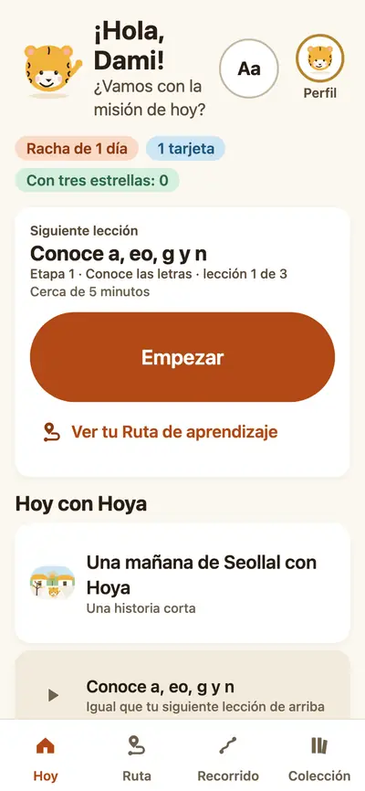
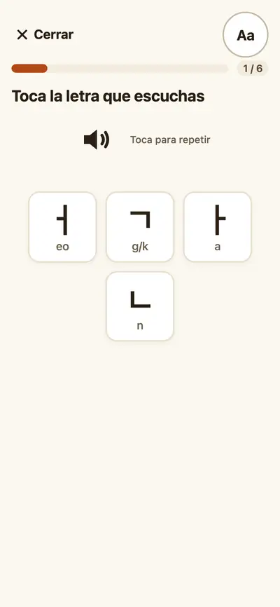
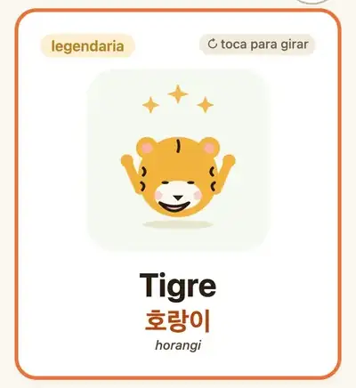

La Etapa 1 es el alfabeto coreano: las letras, sus sonidos y cómo forman sílabas.
Leer letras y sílabas
Escuchar y unir sonidos
Escribir letras trazándolas
Después del alfabetoPalabras, frases cortas, conversaciones e historias del patrimonio, en las mismas misiones de cinco minutos.
Cómo es casi cada misión
1Descubre: mira y escucha una letra nueva.
2Juega: minijuegos cortos que la usan.
3Repasa: una ronda tranquila. Si te equivocas, ves un aviso ámbar, nunca rojo.
Hoya, el tigre, guía cada misión y nunca dice “mal”.

Pantalla de inicio

Un minijuego

Una tarjeta cultural
Ver los minijuegos
Reconocer
Escucha y elige
Escucha un sonido y toca la letra o la palabra.
Reconocer
Une el sonido
Escucha una letra. Toca la ficha que coincide. Sin prisa.
Producir
Arma la sílaba
Junta letras para formar una sílaba coreana de verdad.
Reconocer
Imagen y palabra
Toca una imagen y luego su palabra.
Producir
Traza la letra
Sigue el orden de los trazos. Tu dedo aprende la forma.
Reconocer
Busca el intruso
Tres van juntas. ¿Puedes encontrar la que es diferente?
Aplicar
Trivia cultural
Una palabra coreana y cuatro respuestas. Elige lo que significa.
Aplicar
Ordena la historia
Cuatro tarjetas, una historia. Tócalas en el orden en que ocurren.
Colecciona cultura coreana
Cada letra que aprendes te da una tarjeta: un pedacito de la comida, el arte o la vida diaria de Corea.
강아지gangajiCachorro
나비nabiMariposa
보름달boreumdalLuna llena
라면ramyeon
무궁화mugunghwaRosa de Siria
밥bap
Ver las 24 tarjetas de la Etapa 1
강아지Común
gangaji
Cachorro
Un perrito simpático. Una de las primeras palabras que se oyen en muchos hogares coreanos.
나비Común
nabi
Mariposa
Una florecita voladora que revolotea en muchas canciones coreanas.
보름달Poco común
boreumdal
Luna llena
La luna más brillante del año sale en Chuseok, la fiesta coreana de la cosecha.
라면Común
ramyeon
Fideos humeantes en un tazón rojo y picante. La merienda más querida de Corea.
무궁화Rara
mugunghwa
Rosa de Siria
La flor nacional de Corea: florece todo el verano.
밥Común
bap
En Corea, una comida no está completa sin arroz en el centro de la mesa.
사과Común
sagwa
Manzana
Una manzana roja y dulce para tu lonchera.
인형Común
inhyeong
Muñeca
Desde muñecas de tela hechas a mano hasta figuras de K-pop, a Corea le encantan sus muñecas.
잠자리Común
jamjari
Libélula
Alas rápidas y transparentes que zumban sobre los estanques en verano.
책Común
chaek
Libro
A Corea le gustan tanto los libros que tiene festivales del libro cada año.
케이팝Rara
keipap
K-pop
Grandes canciones, grandes bailes. Con el K-pop, el mundo oye coreano cada día.
태극기Rara
taegeukgi
Un remolino rojo y azul con cuatro símbolos negros. La bandera de Corea.
팽이Poco común
paengi
Trompos de madera que giran sobre el hielo en invierno.
호랑이Legendaria
horangi
Tigre
Muchos cuentos populares coreanos empiezan con «Hace mucho tiempo, cuando los tigres fumaban tabaco...».
아리랑Rara
arirang
Una canción sobre extrañar el hogar. En Corea, mucha gente conoce el primer verso.
야구Común
yagu
El deporte más ruidoso de Corea. La afición lleva tambores y anima durante nueve entradas seguidas.
어묵Común
eomuk
Un bocado de invierno que compras en la calle, con caldo caliente.
여우Poco común
yeou
Zorro
Los zorros de los cuentos coreanos antiguos son astutos y un poco mágicos.
오리Común
ori
Patos marrones caminan bamboleándose por los estanques coreanos. Les encantan las sobras de arroz.
용Legendaria
yong
Dragón
Los dragones coreanos viven en los ríos y traen lluvia cuando la tierra está seca.
우산Común
usan
La temporada de lluvias en Corea dura cerca de un mes. Ten un paraguas junto a la puerta.
윷놀이Rara
yunnori
Juego de yut
Lanza los cuatro palitos: ¡yut!
그네Poco común
geune
En pinturas antiguas, las mujeres coreanas se mecen en columpios gigantes durante la fiesta de Dano.
이불Común
ibul
En muchos hogares coreanos, la gente duerme en un piso cálido bajo mantas acolchadas y de colores llamadas ibul.
Preguntas
¿Los estudiantes inician sesión?
No hace falta correo ni contraseña. Abre la app y elige tu perfil, o escribe el código de tu clase o familia. ¿Cambias de dispositivo? Usa tu código de rescate.
Tengo un código para unirme. ¿Dónde lo escribo?
Abre el enlace para unirse que comparte tu docente. O, en la app, toca Perfil, ve a Clases y familia y toca Unirme a una clase.
¿Funciona sin conexión?
En la mayoría de los dispositivos, sí: después de tu primera visita la app se abre sin conexión. Los sonidos de las letras pueden necesitar una voz coreana instalada en tu dispositivo.
Soy una persona adulta que empieza. ¿Se sentirá infantil?
No. La Etapa 1 enseña justo lo que cualquier principiante necesita primero, las letras y sus sonidos, sin lenguaje infantil. Hoya es amable, y las tarjetas de cultura valen la pena a cualquier edad.
¿Necesito saber algo de coreano?
No. Lo hicimos justo para empezar desde cero. Los menús usan palabras sencillas en inglés, español o coreano, y cada palabra coreana viene con su romanización y su significado.
Ya sé algo de hangul. ¿Tengo que empezar desde el principio?
No. Juega la primera misión, añade un nombre y luego toca «Hacer la prueba de nivel» en Inicio. Hoya te sugiere por dónde empezar.